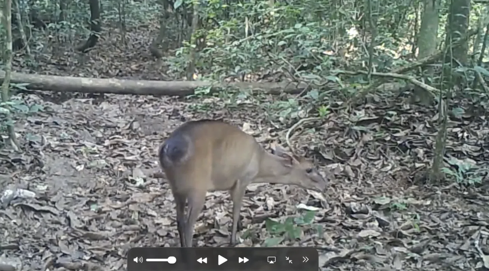
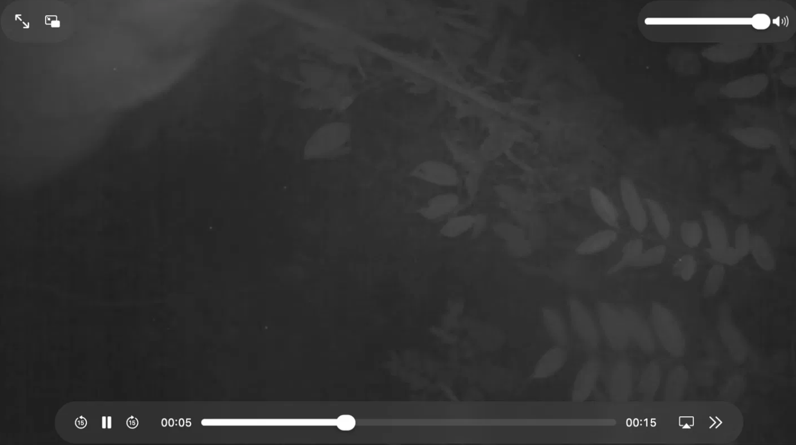
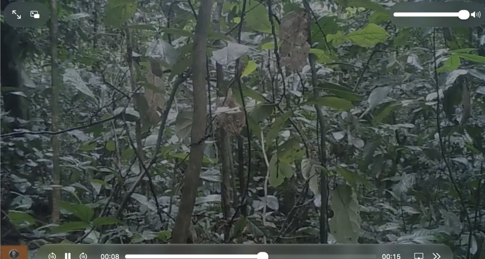

1. Background & Research Context
Community science (also known as citizen science) has revolutionized ecological research by enabling the public to collaborate with professional scientists in analyzing massive datasets. Traditional field biology often faces resource limitations, as researchers cannot spend thousands of continuous hours physically observing remote ecosystems without disrupting wildlife.
The Chimp&See initiative, hosted on the Zooniverse platform, addresses this challenge by deploying motion-triggered camera traps across various biodiversity hotspots in Africa. These non-invasive cameras capture real-time animal behaviors, species interactions, and population dynamics without human interference.

Figure 1: Zooniverse camera trap video interface showing a duiker observation in African forest habitat.
2. Methodology & Data Collection
To ensure scientific accuracy and minimize observational bias, data collection followed a standardized protocol:
- Video Footage Review: Analyzing 15-second camera trap clips captured across various African wildlife habitats.
- Taxonomic Identification: Categorizing species ranging from primates (e.g., chimpanzees, baboons) to ungulates, rodents, and birds.
- Behavioral Documentation: Recording specific activities including foraging, tool usage, social grooming, and territorial signaling.
- Demographic Counting: Logging animal abundance, group composition, and age brackets (adults vs. infants).

Figure 2: Example of wildlife footage classification and behavioral tracking.
3. Investigation Questions & Analysis

Figure 3: Summary of classification results and ecosystem monitoring metrics.
4. Conclusion & Scientific Reflection
Participating in this community science project highlights the crucial intersection of technology, public engagement, and ecological conservation. By contributing systematic classifications, volunteers directly support peer-reviewed research aimed at protecting endangered species and preserving fragile ecosystems. Modern biology relies heavily on these collaborative digital frameworks to address global environmental challenges effectively.